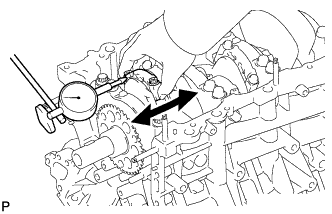
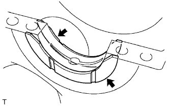
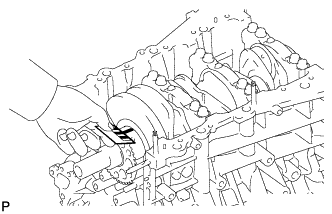

БЛОК ЦИЛИНДРОВ > РАЗБОРКА |
| 1. ПРОВЕРЬТЕ ОСЕВОЙ ЗАЗОР ШАТУНА |
|  |
С помощью индикатора часового типа измерьте осевой зазор при движении шатуна назад и вперед.
| 2. ПРОВЕРЬТЕ МАСЛЯНЫЙ ЗАЗОР ШАТУНА |
Для обеспечения правильной сборки совместите сборочные метки на шатуне и крышке.
Выверните 2 болта крышки шатуна.
Используя 2 снятых болта крышки шатуна, снимите крышку шатуна и нижний подшипник, покачивая крышку шатуна вправо и влево.
Очистите штифт и подшипник коленчатого вала.
Убедитесь в отсутствии на штифте коленчатого вала и подшипнике коленчатого вала следов точечной коррозии и царапин. Если штифт или подшипник коленчатого вала поврежден, замените подшипники. При необходимости замените коленчатый вал.
Оберните полоску сминаемого пластичного калибра Plastigage вокруг штифта коленчатого вала.
| *1 | Сминаемый пластичный калибр Plastigage |
Установите крышку шатуна (Нажмите здесь).
Выверните 2 болта, снимите крышку шатуна и нижний подшипник.
Измерьте ширину сминаемого пластичного калибра Plastigage в самой широкой точке.
| *1 | Сминаемый пластичный калибр Plastigage |
| Параметр / Устройство | Заданные условия |
| Метка 1 | 59,000 - 59,006 мм (2,32283 - 2,32307 дюйма) |
| Метка 2 | 59,007 - 59,012 мм (2,32311 - 2,32330 дюйма) |
| Метка 3 | 59,013 - 59,018 мм (2,32334 - 2,32354 дюйма) |
| Метка 4 | 59,019 - 59,024 мм (2,32358 - 2,32377 дюйма) |
| Параметр / Устройство | Заданные условия |
| Метка 1 | 1,484 - 1,487 мм (0,05843 - 0,05854 дюйма) |
| Метка 2 | 1,487 - 1,490 мм (0,05854 - 0,05866 дюйма) |
| Метка 3 | 1,490 - 1,493 мм (0,05866 - 0,05878 дюйма) |
| Метка 4 | 1,493 - 1,496 мм (0,05878 - 0,05900 дюйма) |
| *1 | Метка с номером |
Полностью удалите сминаемый пластичный калибр (Plastigage).
| 3. СНИМИТЕ ПОРШЕНЬ С ШАТУНОМ В СБОРЕ |
С помощью инструмента для снятия уступа полностью снимите нагар с верхней части цилиндра.
Выдавите поршень с шатуном и верхним подшипником через верхнюю часть блока цилиндров.
| 4. СНИМИТЕ ПОДШИПНИК ШАТУНА |
Снимите подшипники шатунов с шатунов и крышек шатунов.
| 5. СНИМИТЕ НАБОР ПОРШНЕВЫХ КОЛЕЦ |
 |
С помощью съемника поршневых колец снимите 2 компрессионных кольца.
Вручную снимите 2 боковых направляющих и маслосъемное кольцо (расширитель).
| 6. СНИМИТЕ ПОРШЕНЬ С ПАЛЬЦЕМ В СБОРЕ |
Отсоедините шатун от поршня.
С помощью отвертки снимите 2 стопорных кольца.
Медленно нагрейте поршень до температуры примерно 80°C (176°F).
С помощью пластмассового молотка и латунного стержня осторожно выбейте поршневой палец и снимите шатун.
| 7. ПРОВЕРЬТЕ ОСЕВОЙ ЗАЗОР КОЛЕНЧАТОГО ВАЛА |
 |
С помощью индикатора часового типа измерьте осевой зазор, двигая коленчатый вал вперед и назад с помощью отвертки.
| 8. ПРОВЕРЬТЕ МАСЛЯНЫЙ ЗАЗОР КОЛЕНЧАТОГО ВАЛА |
Равномерно в несколько приемов ослабьте и выверните 8 болтов крышек подшипников вместе с 8 уплотнительными шайбами в последовательности, показанной на рисунке.
В несколько приемов равномерно ослабьте и выверните 16 болтов крышек подшипников в последовательности, показанной на рисунке.
Отверткой подденьте крышки подшипников. Снимите 4 крышки подшипников и нижние подшипники.
Снимите 2 нижних упорных шайбы коленчатого вала.
Поднимите коленчатый вал.
|  |
Снимите 2 верхний упорные шайбы.
Очистите все шейки и подшипники коленчатого вала.
Проверьте, нет ли на шейках и подшипниках коленчатого вала царапин и следов точечной коррозии.
При наличии повреждений на шейке или подшипнике замените подшипники. При необходимости замените коленчатый вал.
Установите коленчатый вал в блок цилиндров.
На каждую шейку положите сминаемый пластичный калибр (Plastigage).
| *1 | Сминаемый пластичный калибр Plastigage |
Установите крышку подшипника коленчатого вала (Нажмите здесь).
Снимите крышку подшипника коленчатого вала.
|  |
Измерьте ширину сминаемого пластичного калибра Plastigage в самой широкой точке.
 |
При замене подшипника устанавливайте подшипник с таким же номером. Если не удается определить номер подшипника, выберите нужный подшипник, сложив номера, указанные на блоке цилиндров и коленчатом вале, после чего обратитесь к таблице ниже. Существует 5 стандартных типоразмеров подшипников, имеющих маркировку, соответственно, "1", "2", "3", "4" или "5".
| Параметр / Устройство | Заданные условия | ||||
| Диаметр отверстия коренной шейки блока цилиндров (А) + Диаметр коренной шейки коленчатого вала (B) | 0-5 | 6 - 11 | 12 - 17 | 18 - 23 | 24 - 28 |
| Используйте подшипник | 1 | 2 | 3 | 4 | 5 |
| *1 | Метка с номером |
| Метка | Заданные условия |
| Метка 00 | 77,000 мм (3,03149 дюйма) |
| Метка 01 | 77,001 мм (3,03152 дюйма) |
| Метка 02 | 77,002 мм (3,03156 дюйма) |
| Метка 03 | 77,003 мм (3,03160 дюйма) |
| Метка 04 | 77,004 мм (3,03164 дюйма) |
| Метка 05 | 77,005 мм (3,03168 дюйма) |
| Метка 06 | 77,006 мм (3,03172 дюйма) |
| Метка 07 | 77,007 мм (3,03176 дюйма) |
| Метка 08 | 77,008 мм (3,03180 дюйма) |
| Метка 09 | 77,009 мм (3,03184 дюйма) |
| Метка 10 | 77,010 мм (3,03188 дюйма) |
| Метка 11 | 77,011 мм (3,03192 дюйма) |
| Метка 12 | 77,012 мм (3,03196 дюйма) |
| Метка 13 | 77,013 мм (3,03200 дюйма) |
| Метка 14 | 77,014 мм (3,03204 дюйма) |
| Метка 15 | 77,015 мм (3,03208 дюйма) |
| Метка 16 | 77,016 мм (3,03211 дюйма) |
| Параметр / Устройство | Заданные условия |
| Метка 00 | 71,999 - 72,000 мм (2,83460 - 2,83464 дюйма) |
| Метка 01 | 71,998 - 71,999 мм (2,83456 - 2,83460 дюйма) |
| Метка 02 | 71,997 - 71,998 мм (2,83452 - 2,83456 дюйма) |
| Метка 03 | 71,996 - 71,997 мм (2,83448 - 2,83452 дюйма) |
| Метка 04 | 71,995 - 71,996 мм (2,83440 - 2,83448 дюйма) |
| Метка 05 | 71,994 - 71,995 мм (2,83440 - 2,83444 дюйма) |
| Метка 06 | 71,993 - 71,994 мм (2,83436 - 2,83440 дюйма) |
| Метка 07 | 71,992 - 71,993 мм (2,83432 - 2,83436 дюйма) |
| Метка 08 | 71,991 - 71,992 мм (2,83428 - 2,83432 дюйма) |
| Метка 09 | 71,990 - 71,991 мм (2,83424 - 2,83428 дюйма) |
| Метка 10 | 71,989 - 71,990 мм (2,83420 - 2,83424 дюйма) |
| Метка 11 | 71,988 - 71,989 мм (2,83416 - 2,83420 дюйма) |
| Параметр / Устройство | Заданные условия |
| Метка 1 | 2,488-2,491 мм (0,0980-0,0981 дюйма) |
| Метка 2 | 2,491-2,494 мм (0,0981-0,0982 дюйма) |
| Метка 3 | 2,494-2,497 мм (0,0982-0,0983 дюйма) |
| Метка 4 | 2,497-2,500 мм (0,0983-0,0984 дюйма) |
| Метка 5 | 2,500 - 2,503 мм (0,0984 - 0,0985 дюйма) |
Полностью удалите сминаемый пластичный калибр (Plastigage).
| 9. СНИМИТЕ КОЛЕНЧАТЫЙ ВАЛ |
Поднимите коленчатый вал.
Снимите 2 верхние упорные шайбы.
| 10. СНИМИТЕ ПОДШИПНИК КОЛЕНЧАТОГО ВАЛА |
Снимите подшипники коленчатого вала с крышек подшипников и блока цилиндров.
| 11. СНИМИТЕ МАСЛЯНУЮ ФОРСУНКУ № 1 |
С помощью торцевой шестигранной головки на 5 мм выверните 3 болта и снимите 3 масляных форсунки.
| 12. СНИМИТЕ РЕЗЬБОВУЮ ШПИЛЬКУ |